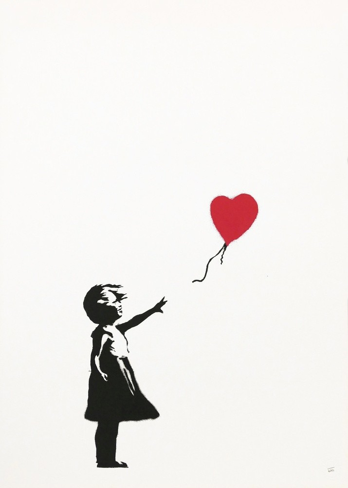

Kunst aan de wand
Afbeelding: Banksy/ Girl With Balloon
Deze website gaat over de kunstenaar achter de schilderijen. Een kunstenaar als Banksy is wereldberoemd om zijn kunstwerken, maar ook vanwege de boodschap die achter ieder schilderij zit. Achter ieder kunstwerk zit een kunstenaar. En wie dat is, zoek ik graag uit.